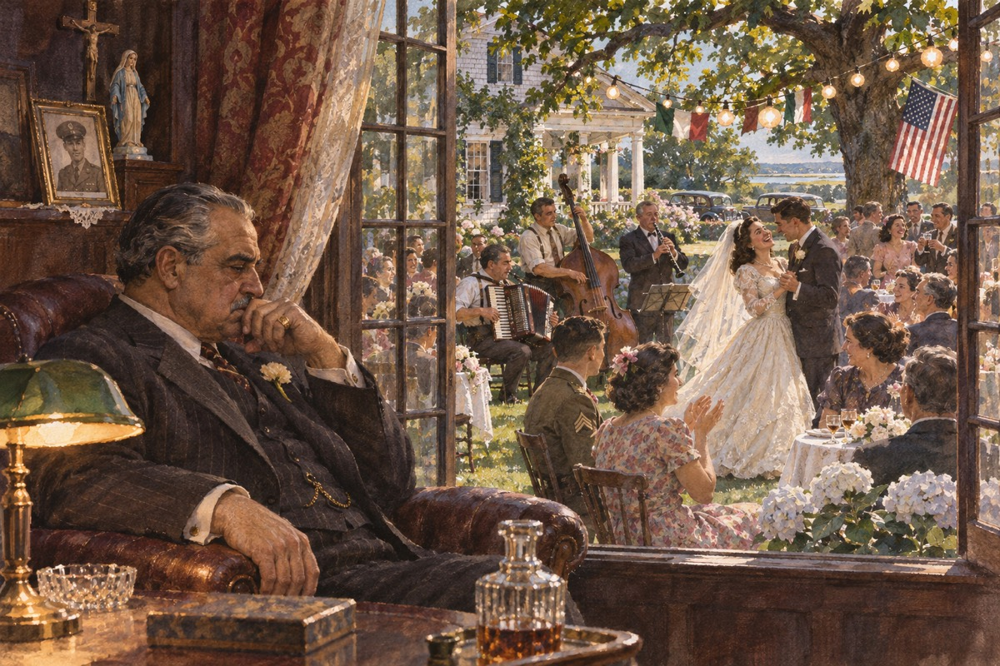
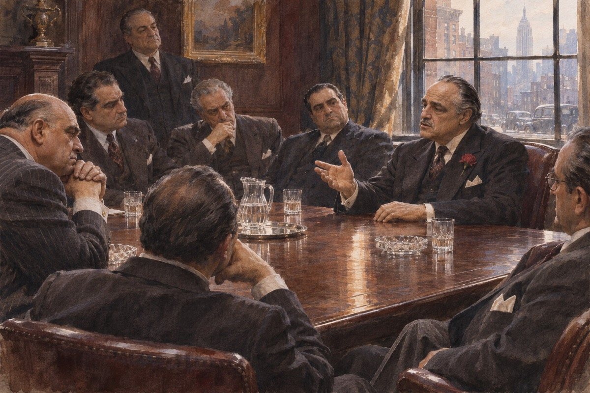
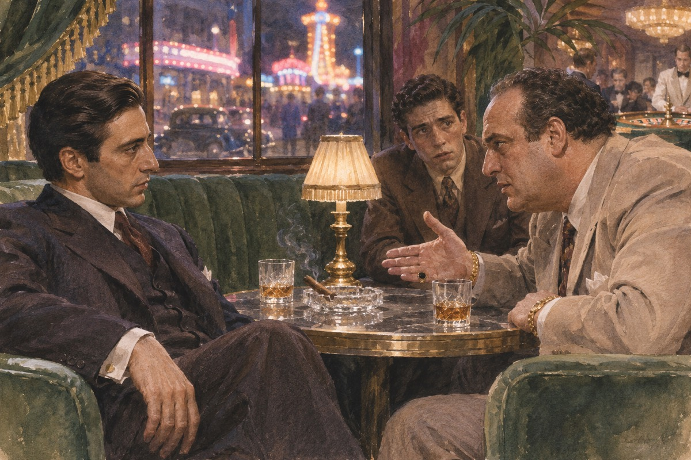

婚礼
科莱昂家的女儿康妮结婚，院子里摆了三百人的酒席。维托·科莱昂坐在阴影里，接见那些来求他的人。他说：我这一辈子，只求一件事，就是别人尊重我。他说：你不尊重我，我就当你不是人。有人问他：你为什么要帮那些人。他说：因为他们叫我教父。他说：这个称呼不是白叫的。他后来跟人说：我这一辈子，只学会一件事，就是让人怕我。他说：怕比爱靠得住。

三个请求
殡仪馆老板说女儿被人打了，法院判了缓刑。维托说：你要我做什么。他说：我要他们死。维托说：那不是正义。他说：你要他们像我女儿一样疼。维托说：好。他说：有一天我会叫你做一件事。殡仪馆老板说：我要他们死。维托说：我不会给你这个。他说：我给你别的。他说：有一天我会叫你做一件事。他接过那张纸，看了很久，说：这个人的女儿，我见过。他说：她是个好孩子。
迈克尔回来了
迈克尔穿着军装回家，带着大学女友凯。他说：我不掺和家里的事。维托说：我知道。他说：我有我自己的路。维托说：好。他父亲看着他，眼里有一点东西，不是失望，是明白。凯说：你家里的人真奇怪。迈克尔说：他们不奇怪，他们只是老派。她说：那你会变成他们吗。他说：不会。他把军装脱下来，挂在椅背上，说：我不会穿第二次。他母亲看着那件衣服，没有说话。
枪击
维托在水果摊前被两个人开枪打中，身中五枪，没有死。桑尼接手家业，说要报仇。他说：我要把他们的眼睛挖出来。汤姆·黑根说：先查清楚。他说：查清楚再挖。桑尼把电话砸了，说：我要他们的命。汤姆说：你先坐下。他说：我坐不下。他说：我爸还在里面。桑尼说：我要他们的命。维托在病床上说：先查清楚。他说：查清楚了再要。
空床
迈克尔去医院看父亲，发现保镖全被撤走了。他把父亲推到另一间病房，站在门口，握着一个陌生人的手，装作有枪。警察来的时候，他说：我是他儿子。他没有走。那一刻他变成了另一个人。那个警察说：你在这儿干什么。迈克尔说：我陪我父亲。他说：你有枪吗。迈克尔把手伸出来，说：你搜。警察没有搜。他站在病房门口，听见里面的仪器在响。他想：我爸要是死了，我就完了。
两枪
迈克尔约索洛佐和那个警长在餐厅见面。他从厕所拿出枪，走出来，先打索洛佐的头，再打警长的胸口。他走出餐厅，坐上一辆车，去了西西里。他后来回忆：我没有想，我只是做了。他走出餐厅的时候，手还在抖，可脚步很稳。他后来跟人说：那一刻我知道，我这辈子回不去了。他上车以后，手一直在抖。司机说：你没事吧。他说：没事。他说：开快点。
桑尼
桑尼在去接妹妹的路上，被设了圈套。收费站的枪手从三面开火，他被打成了筛子。康妮的丈夫卡洛是内应。维托回来以后，只问了一句：是谁。汤姆说：卡洛。维托说：先别动他。他被打中的时候，手里还握着一枚硬币。他倒在车门口，眼睛睁着。康妮在屋里听见枪声，说：是他来了。康妮在电话里哭，说：他们打他。桑尼把电话摔了，说：我出去一下。他就没有回来。
阿波罗妮亚
迈克尔在西西里躲了一年，娶了一个当地姑娘，叫阿波罗妮亚。他们开车出去，车炸了，她死在车里。他站在火光前面，脸上没有表情。他说：我要回去。他说：我要做我父亲做的事。他站在烧黑的车架子前面，一动不动。有人拉他，他不动。他说：把她的父亲找来。他说：我要娶她的时候，答应过保护她。他把她父亲找来的时候，说：我要娶她。那人说：你是个外国人。他说：我是。
和解
维托跟五大家族开会，说：我不报仇，我只求平安。他答应不再管毒品。他回到家里，对迈克尔说：我这一辈子，没有遗憾。他说：只有一件事——我从来没想过你会接我的班。维托说：我这辈子没有遗憾。他说：我做过的事，我不后悔。他说：只有一件——我不该让你回来。他说：我不报仇，我只求平安。有人说：你老了。他说：我老了。

拉斯维加斯
迈克尔去拉斯维加斯，找莫·格林谈买赌场。格林说：你父亲那套过时了。迈克尔说：那你跟我谈。格林说：你算什么。迈克尔说：我算什么，你很快就知道。他后来买下了赌场。弗雷多说：我在这儿很好。迈克尔说：你在这儿是个跑腿的。他说：我愿意。迈克尔说：你不该愿意。他说：这个地方，以后会归我们。格林说：你凭什么。他说：凭我姓科莱昂。

维托之死
维托在菜园里跟孙子玩，蹲下去，倒下，没有再起来。他死的时候说了一句：人生太美了。葬礼上，五大家族的人都来了。迈克尔站在门口，一个一个看他们的脸。他蹲下去，说：你看这颗西红柿。他说：它长得好。他说完，就倒了。他的孙子在旁边玩，不知道发生了什么。他蹲下去的时候，手里还捏着那颗西红柿。他说：它长得好。他说完就倒了。
洗礼
康妮的孩子受洗，迈克尔站在教堂里，手放在圣水盘上。同一时间，他的手下在五个地方动手：杀了五大家族的头目、杀了叛徒、杀了卡洛。牧师问：你弃绝撒旦吗。他说：我弃绝。他站在教堂里，听见管风琴。同一时刻，五个人倒在五个地方。牧师说：你信上帝吗。他说：我信。他站在教堂里，听见孩子在哭。他想：我也在受洗。他想的不是那个孩子。
出处 · 小说第 30 章 洗礼
清理之后
康妮冲进办公室，把盘子摔在迈克尔脚下，说：是你杀了他。她是迈克尔的妹妹，可这一刻她像一个外人。迈克尔让人把她送回去，说：她太激动了。凯问他：卡洛呢。他说：卡洛去别的地方工作了。她说：你骗我。他说：我没有。他看着她的眼睛，眼睛没有躲。她想：他学会了。她想起父亲说过的一句话：别问家里的事。
教堂
凯一个人去了教堂。她跪下来，点了一支蜡烛，为迈克尔的灵魂祈祷。神父走过来，问她为谁祈祷。她说：为我的丈夫，迈克尔·科莱昂。她抬头的时候，看见几个人从侧门进来，站在后面。她认得他们的脸，那是迈克尔的人。她低下头，继续祈祷。小说在这里结束。
出处 · 小说末章